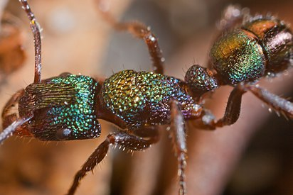
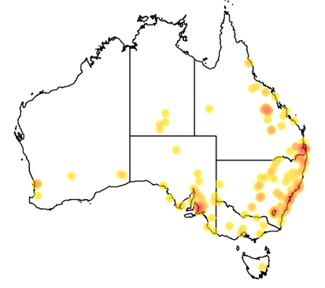
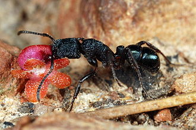
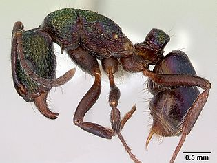

Зеленоголо́вый мураве́й[2] (лат. Rhytidoponera metallica) — вид мелких тропических муравьёв рода Rhytidoponera из подсемейства Ectatomminae. Несмотря на свой размер (длина тела от 5 до 7 мм), они обладают сильным жалом, яд которого способен вызвать у человека анафилактический шок. Название насекомого связано с необычной металлически блестящей сине-зелёной окраской с переливами от зеленоватой до бронзово-фиолетовой, сходной с таковой у ос-блестянок. Могут служить орудием биологической борьбы с вредителями, убивая сельскохозяйственных вредителей. Эндемик Австралии, интродуцированный в Новую Зеландию.
Муравейники строят в почве и под камнями во многих биотопах, включая леса, редколесья, пустыни, открытые луга, а также лужайки и сады в городах. Дневные хищники, которые активны в светлое время суток. Охотятся на насекомых и других членистоногих, собирают падаль и сладкие выделения тлей и червецов. Играют важную роль в распространении семян (мирмекохория) и в уничтожении вредителей (жуков, термитов, гусениц). Рабочие зелёноголового муравья являются гамэргатами и могут спариваться с самцами, настоящие муравьиные матки редки. Брачный лёт происходит весной, основание новых семей — или почкованием, или полунезависимое: самки самостоятельно образуют новую семью, но могут выходить на фуражировку.
Распространение
Встречается в Австралии. Один из самых широко распространённых на этом материке его эндемиков. Отмечается практически повсеместно в штатах Виктория, Новый Южный Уэльс, на Австралийской столичной территории и в Южной Австралии. Встречается также на территории Западной Австралии, но менее обычен на севере; найден в южной части Северной территории и на востоке Квинсленда. Эти муравьи отсутствуют на острове Тасмания, хотя имеется очень старое указание в источнике 1887 года.
Интродуцированы на Северный остров Новой Зеландии, где впервые были обнаружены в 1959 году. Предположительно были завезены вместе с грузом древесины; по крайней мере, другие виды Rhytidoponera интродуцировались этим путём. Закрепившиеся популяции муравьёв зафиксированы в городе Нейпир, где эти муравьи были собраны между 2001 и 2003 годами. Ранее их гнёзда находили в Пенроузе в окрестностях Окленда и в городе Маунт-Маунгануи, но в последнее время их там не обнаруживалось.
Описание
Муравьи с телом длиной от 5 до 7 мм. Грудь выпуклая в профиль. Имеют металлически блестящую сине-зелёную окраску с переливами от зеленоватой до бронзово-фиолетовой, сходную с таковой у ос-блестянок. Обладают сильным жалом и ядом, способным вызвать анафилактический шок у особо чувствительных людей. Нижнебоковой угол переднегрудки (перед передними тазиками) — с острым зубцом, направленным вниз. Усики рабочих 12-члениковые (13-члениковые у самцов). Нижнечелюстные щупики рабочих состоят из трёх сегментов, нижнегубные щупики — двучлениковые. Жвалы с многочисленными мелкими зубчиками (12—30). Грудь у рабочих по причине отсутствия у них крыловых мышц более узкая и сжатая с боков по сравнению с самками; кроме того, рабочие немного меньше самок, однако в целом они трудноразличимы[9][3][10]. Самцы ещё меньше рабочих и самок (длина их тела — около 5 мм), и у них преобладает буровато-чёрная окраска тела. Лапки буроватые, жвалы бороздчатые[11]. У самцов, в отличие от рабочих и самок, очень короткий скапус усиков, поверхностная морщинистость плотнее на голове и груди, количество микроямок меньше, чем у других каст на постпетиоле. Первый сегмент брюшка поперечно-бороздчатый, а опушение ног менее плотное[12]. Гениталии самцов в целом сходны с таковыми у других близких видов муравьёв, состоят из внешних, средних и внутренних пар вальв, последних сегментов брюшка
Преобладающий, металлически блестящий цвет муравьёв — зелёный, но он может варьироваться в зависимости от региона, от металлического зелёного до пурпурного. В хребтах Флиндерс в Южной Австралии и около Алис-Спрингс на Северной территории цвет муравьёв меняется с типичного зелёного на тёмно-фиолетовый. В областях с большим количеством осадков, таких как плоскогорья Нового Южного Уэльса и саванны Виктории, муравьи в основном зелёные с пурпурными оттенками по бокам мезосомы. В северных регионах Нового Южного Уэльса и Квинсленда верхняя часть тела красновато-фиолетовая, переходящая в золотистый цвет вокруг нижних частей плевры. Зелёный цвет в этом случае либо ограничен, либо полностью отсутствует. У большинства популяций есть ярко-зелёный цвет брюшка, за исключением тех, кто живёт в пустыне. В некоторых районах недалеко от Брисбена были обнаружены две разные по цвету формы в пределах одной колонии. Было высказано предположение, что две цветовые формы могут представлять собой два вида-близнеца, однако это не может быть подтверждено из-за отсутствия доказательств. На крайнем севере Квинсленда популяции муравьёв выглядят тускло-зелёными и отличными от более ярких, обитающих южнее. Неизвестно, действительно ли популяции крайнего севера представляют собой другой вид. Помимо цветовых вариаций, между популяциями существуют морфологические различия. Например, размер и форма головы и петиоля, длина ног и другие скульптурные детали тела могут варьироваться.
Личинки имеют размер до 4,4 мм и похожи на личинок Rhytidoponera cristata. Их можно отличить по менее вздутому брюшку и более коротким волоскам на теле, размером от 0,096 до 0,2 мм. На грудном и брюшном отделах они наиболее крупные и достигают 0,2 мм. На жгутиковых и вентральных частях брюшка они имеют размер от 0,075 до 0,15 мм. Волоски на голове имеют короткие зубчики, а на антеннах есть апикальные сенсиллы, каждая из которых содержит несколько вздутый шипик. Молодые личинки намного меньше, чем зрелые личинки, и имеют длину 1,5 мм. Они выглядят внешне похожими на зрелых личинок, но их диаметр отличается, постепенно уменьшаясь от пятого отдела тела к переднему концу. Волоски имеют размер от 0,02 до 0,18 мм, причём самые длинные из них обнаруживаются на жгутиковых выступах и на некоторых отделах тела; однако там волоски становятся редкими. Кончики волос на голове простые, а общая длина волосков на голове составляет от 0,02 до 0,076 мм. Обе антенны имеют субконическую структуру и три апикальные сенсиллы, напоминающие шипик. Мандибулы субтреугольной формы с изогнутой вершиной. Апикальные и субапикальные зубцы острые и короткие, а проксимальный — тупой. В отличие от зрелых личинок, их проксимальный зубец не делится на две части.
Биология
Гнездятся в почве и под камнями. В Австралии встречаются во многих биотопах, включая леса, редколесья, пустыни, открытые луга, лужайки и сады в городах. Дневные хищники, охотящиеся на членистоногих и собирающие сладкие выделения тлей и червецов. Играют важную роль в распространении семян (мирмекохория) и в уничтожении вредителей (жуков, термитов, гусениц). Рабочие зелёноголового муравья являются гамэргатами и могут спариваться с самцами, настоящие самки редки. Брачный лёт происходит весной, основание новых семей — или почкованием или полунезависимое: самки самостоятельно образуют новую семью, но могут выходить на фуражировку
Фуражировка и питание
Зелёноголовые муравьи — дневной вид, который активен в светлое время суток, быстро добывая пищу либо на земле, либо на растительности. Rhytidoponera metallica — падальщики, хищники и собиратели семян, обычно имеющие широкий рацион из животного материала, насекомых, мелких членистоногих, семян и медвяной падевой росы от насекомых. Рабочие обычно охотятся на жуков, бабочек и термитов, используя свои жала, чтобы убить их, вводя яд. Удаление капитулы (capitula, структура, похожая на сочные элайосомы семян) из яиц палочника Eurycnema goliath уменьшает шансы на то, что их будут собирать муравьи Rhytidoponera metallica, которые переносят их в свои гнёзда. В районах, где доминирует мясной муравей (Iridomyrmex purpureus), муравей Rhytidoponera metallica не подвержен влиянию его присутствия и все ещё успешно находит источники пищи. Поскольку муравьи Rhytidoponera metallica являются примитивными обычными хищниками, в отличие от более продвинутых видов (которые добывают пищу группами и всегда общаются через следовые феромоны), они не могут защитить источники пищи от доминирующих муравьёв. Они сильно зависят от любого источника пищи, а невозможность успешно защитить его от других муравьёв, возможно, привела к тому, что они мирно сосуществуют с доминирующими видами, включая мясных муравьёв.
Зелёноголовый муравей является семеноядным видом (как и муравьи-жнецы), предпочитая семена с низкими механическими защитными свойствами. Семена с более твёрдой кожурой редко употребляются ими в пищу[19][20]. Известно, что они собирают семена без ариллуса и рассеивают семена различных видов акаций: миртовой (Acacia myrtifolia), золотой (Acacia pycnantha), прибрежной (Acacia sophorae), сладкой (Acacia suaveolens) и можжевеловой (Acacia ulicifolia)[21]. Муравьи Rhytidoponera metallica перемещают почти половину семян, которые они ранее принесли, примерно на 60—78 см в сторону от своих гнёзд, как в несгоревшие, так и в сожжённые пожарами места обитания[22]. В некоторых случаях семена Adriana quadripartita распространяются гораздо дальше; Rhytidoponera metallica составляют 93 % всех муравьёв, которые собирают эти семена и могут рассеивать их на расстоянии до 1,5 метров[23]. Было показано, что Rhytidoponera metallica, наряду с Aphaenogaster longiceps, по сравнению с другими видами муравьёв собирали наибольшее количество семян и выбрасывали их на вершине своего гнезда[24]. Большинство семян, рассеянных муравьями Rhytidoponera metallica и A. longiceps, в конечном итоге съедаются муравьями из рода Pheidole. Так как семена имеют более высокую выживаемость, если их не собирает Pheidole, то два вышеназванных вида муравьёв более полезны для семян, чем Pheidole[24]. Семена в муравейниках Rhytidoponera metallica прорастают редко
Фуражировочные факторы, такие как время, проведённое вне гнезда, и расстояние, пройденное рабочими для поиска пищи, коррелируют с размером колонии[26]. Рабочие, живущие в небольших колониях, как правило, добывают меньше пищи и проводят меньше времени на территории, тогда как рабочие в более крупных колониях проводят больше времени вне муравейника и на большем расстоянии от своего гнезда. Такие результаты были также замечены у медоносной пчелы (Apis mellifera), но, в отличие от пчёл, рабочие муравьи из малых и крупных колоний переносили одинаковую рабочую нагрузку. Сокращение времени на фуражировку может снизить риск гибели от крупных хищников и сэкономить энергию[26]. Более короткие периоды фуражировки, наблюдаемые в небольших колониях, приводят к тому, что эти гнёзда сохраняют энергию и в целом ведут себя менее энергично. Групповой поиск происходит только в том случае, если рабочий встречает другого соплеменника, который сильно загружен ресурсами. Поскольку эти муравьи являются одиночными фуражировщиками и редко вербуют других обитателей гнезда, вероятность того, что рабочий встретится с другими, увеличивается, если они маркируют землю следовыми феромонами. Такое поведение может служить простым методом локализованной химической мобилизации других соплеменников из своего гнезда[26]. Проведение маркировки следовыми феромонами усиливается, когда рабочие-разведчики сталкиваются с крупными кормовыми объектами добычи, что говорит о том, что фуражиры с тяжёлыми грузами намеренно пытаются повысить уровень встречаемости с соплеменниками. Однако, когда рабочие переносят мелких или крупных сверчков, маркировка территории следовыми феромонами снижается, чтобы обеспечить эффективность транспортировки и сократить время возвращения муравьёв[26]. Рабочие могут быстро перенастроить свою деятельность по добыче пищи в соответствии с качеством кормового ресурса
Жизненный цикл
Самцы у муравьёв Rhytidoponera metallica появляются нерегулярно в течение года и являются низколетящими муравьями[30]. Роение муравьёв происходит в весенний для Южного полушария период с сентября до ноября при температуре 20—25 °C, когда большинство самцов покидает свои муравейники
Однако иногда самцы возвращаются в своё гнездо после краткого появления за пределами муравейника. Зелёноголовый муравей — это гамэргатный вид, что означает, что самцы могут успешно спариваться с рабочими[32]. Эти рабочие остаются вне своего гнезда с поднятыми вверх брюшками. Наблюдения показали, что рабочие сначала нападают на самцов, когда они впервые сталкиваются друг с другом, а затем самец садится на рабочего, хватая его мандибулами в области шеи и успешно прикрепляя себя[31]. Оба муравья обычно остаются неподвижными, когда спариваются, но иногда рабочие могут ухаживать за собой (чиститься) или передвигаться несколько мгновений спустя, тем самым разъединяясь с самцом. В нескольких случаях было замечено, что рабочие двигались, как только начинается совокупление, и тащили самца, в конечном итоге освобождаясь от него. Копуляция обычно имеет продолжительность от 30 секунд до почти одной минуты и происходит с 8 до 9 утра. Большинство пар спариваются один раз, но некоторые другие могут совокупляться друг с другом дважды. В некоторых случаях самцы успешно спариваются с двумя рабочими, а некоторые пары могут вернуться в своё гнездо даже во время спаривания
Враги и мирмекофилы
Муравьи Rhytidoponera metallica являются добычей целого ряда хищников, включая клопов-хищнецов (Reduviidae) и австралийскую ехидну (Tachyglossus aculeatus), в фекалиях которой были обнаружены рабочие муравьи[45][46]. Птицы также питаются этими муравьями, в том числе австралийский белый ибис (Threskiornis moluccus), чёрный коршун (Milvus migrans), солдатский чибис (Vanellus miles) и австралийский совиный козодой (Aegotheles cristatus)[47]. Рабочие муравьи и личинки могут быть заражены паразитами; осмотренные рабочие были замечены с куколками поздней стадии неопознанного паразита в их грудных сегментах[48]. В гнёздах Rhytidoponera metallica иногда встречаются мирмекофильные насекомые, такие как жуки Chlamydopsis longipes
Перейти наверх